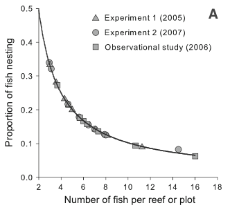
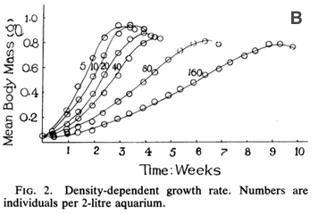

Question Key
The content video described different ways to think about how to
define a species. With the next four questions, let’s think about why
there are so many different species definitions and what the
consequences are of choosing one versus another.
-
What’s the common idea that underlies the different methods of defining
species? That is, what we might think of as a basic way to explain what
we mean when we say that two organisms belong to different species?
Reproductive isolation is
the underlying idea here. When we build phylogenies and think about what
we mean by defining something as a species, we have this idea that a
good species will be on its own evolutionary trajectory, separate from
other species. That means that it is reproductively isolated from other
species – it is not exchanging genetic information. This is built into
the way we create phylogenies – we define relationships based on genetic
similarity due to shared ancestry.
-
Why is it so hard to define a single species concept that works in all
cases? Why might it matter what species concept we choose to apply?
Multiple reasons that this
is hard! One of them is that speciation is a process, it’s not a binary
switch, it rarely happens in one defined step or point in time. (The
exception to that, of course, is that polylploidy can create a new,
reproductively isolated species in a single generation.) Two populations
of one species can be separated from each other and may eventually
become different species, possibly unable to interbreed, but there will
also be a (potentially long) period when they are able to interbreed and
there may still be gene flow between them, even if they look or behave
very differently from one another.
Another big issue is that
evolution of sexual taxa and that of asexual taxa can be rather
different. Reproduction is how we define species that are sexual since
different individuals bring their genetic information together to create
new individuals. But in non-sexually reproducing taxa, like bacteria,
this does not happen. So should that mean that every single bacterium
represents a separate species since it doesn’t exchange genetic
information with another bacterium? Clearly not! And, though they don’t
use sexual reproduction, bacteria do have mechanisms for exchanging
information (horizontal gene transfer). One thing we can see in common
between sexual and asexual taxa is the thread of genetic similarity – we
still use this criterion in the case of bacteria to define species.
Along the same lines, in some groups of taxa, hybridization between
somewhat distant species is not unusual (happens a bunch in plants) and
might in fact act as a mechanism for creating genetic variation. So we
have to think carefully about what horizontal gene transfer and
hybridization mean in any given example. Note that horizontal gene
transfer and hybridization might be “common” at the evolutionary scale
of many generations and populations while still being fairly uncommon at
the level of how likely this is to happen to any particular individual
of that species.
-
The process by which new species evolve, speciation, is commonly divided
into two general types: allopatric speciation and sympatric speciation.
-
What’s the difference between sympatric and allopatric speciation? Why
do biologists think this matters?
Allopatric speciation is the
process when two populations diverge into different species while living
in separate areas, not overlapping in geographic range (allo =
different, patry = fatherland). Sympatric speciation is when two
populations become difference species but live in the same or
overlapping geographic ranges (sym = same, patry = fatherland).
Biologists care about this because gene flow (hybridization) between two
incipient species (beginning to become different) can occur much more
easily when the two groups are found in the same spaces. So, speciation
seems more likely when the two groups are living in allopatry compared
to sympatry. Enough of a reduction of gene flow to allow the two groups
to become reproductively isolated seems much more difficult to achieve
in sympatry compared to allopatry.
-
What evolutionary forces are most important in each type of speciation
(sympatric and allopatric)?
Remembering the evolutionary
forces we’re thinking about are: mutation; nonrandom mating; genetic
drift; gene flow; selection. We won’t consider mutation much as it’s a
slow process and not so different between allopatric and
sympatric.
Allopatric: genetic drift
and gene flow will be critical. In particular, genetic drift is likely
to be the main driver of differences between group A and B living in
different places. In addition, anything that reduces the rate of gene
flow between A and B will also be critical here, allowing for greater
change due to drift. Selection may also help to differentiate A and B,
IF they live in environments that have different selective pressures
(such as differences in salinity, precipitation, altitude).
Sympatric: Because there
will likely be more gene flow than if A and B were separate, genetic
drift likely won’t contribute much to making A and B different from each
other (b/c they are still connected by too much gene flow). More likely,
nonrandom mating (favoring mating with individuals from the same group)
will be important in creating barriers to reproduction. Similarly,
selection which favors mating with individuals from the same group will
also aid in creating barriers to interbreeding, thus allowing speciation
to occur. However, any ongoing gene flow can erode the differences
created by nonrandom mating and selection, making it less likely that
speciation happens. Selection will have to be strong to overcome gene
flow’s effect.
-
What makes sympatric speciation controversial?
Many biologists have felt
that it’s nearly impossible for nonrandom mating and selection to be
stronger than the effects of gene flow. In part this is because when A
and B do evolve to be different from each other, in order to continue to
be species into the future they probably need to be unable to mate with
one another. However, this is likely to require a lot of time to occur…
populations will have to have the “right” mutations arise that cause
incompatibility. To add to the problem, the general sense is that
nonrandom mating and selection tend to be things that occur for
relatively short timescales compared to something like gene flow. So, if
the environment changes in some way and the source of the natural
selection (that favored different phenotypes in A from those in B)
disappears, gene flow will quickly cause the collapse of A and B back
into a single species.
Other biologists question
whether the complete cessation of gene flow is necessary for speciation
to be considered complete. This is partly based on the observation of
gene flow being possible even between many species that are not
especially close relatives, without that causing them to lose their
species identity. There is a lot of debate about how much gene flow is
enough to prevent speciation (or to maintain two groups as one
species).
-
With some frequency we find what appear to be well-defined species (they
look or behave very differently) that are capable of and in fact
experience some level of gene flow. Give a hypothesis for why some pairs
of closely-related species can produce hybrids while others cannot.
There are mutliple possible
reasonable responses. Here are a few examples:
Closely-related species that
happen (by chance) to have evolved so that they are genetically
incompatible will not be able to produce fertile hybrids. This could
happen due to a change in the structure of chromosomes so that
homologous chromosomes can no longer pair up correctly during
meiosis.
If two closely-related
species live in the same or nearby areas but reproduce at different
times of year, then there is no benefit to evolving to avoid breeding
since they won’t end up encountering each other during a breeding
season. Thus, they may be inter-fertile. However, if breeding is
possible, it could be favorable to avoid breeding with the other species
(if that reduces number of offspring or their survival), and thus
individuals that did avoid inter-breeding would have an
advantage.
Another possibility is that
some species might be genetically compatible (such as having the same
number of chromosomes) but perhaps their reproductive structures have
evolved such that it’s not possible for fertilization to occur unless
the male and female have physically compatible structures. In other
species, this difference may not have arisen, allowing for hybridization
in some cases and not others.
For the next three questions, we’ll focus on a couple of graphs
demonstrating logistic growth. The content videos discuss the idea that
logistic growth occurs when a population can’t keep growing at the
maximum possible rate forever because of factors like limited resources
or increasing numbers of predators. Because the rate of growth slows
down as the population size increases, logistic growth is a form of
density-dependent growth. By describing the growth as density-dependent,
we can test for limitations on growth without having to observe
population size over long periods of time. Instead, we can measure
growth-related traits for a species in populations that have differing
densities. To think about what this means—and what a density dependent
pattern looks like, use the figures below to answer the following
questions.

Figure 1. Measurements of density dependence in (A) populations of
bridled gobies (a fish) and (B) Rana tigrina tadpoles.
-
Figure 1A shows data collected from natural populations of the bridled
goby, a coral reef fish that exhibits density-dependence.
-
Describe the relationship depicted in this graph (specify the axes and
how one variable changes with the other). Exactly what is it that tells
us density-dependence is occurring?
-
What do you think the graph would look like if there was not
density-dependence?
In Figure 1A, we see that
the fraction of the goby population that is nesting (y-axis) changes
depending on how many fish are present on the reef or plot (x-axis). As
the number of fish on the reef increases, a smaller fraction of the
population are actually nesting. So, probability of reproducing is
negatively correlated with population density.
If there was not density
dependence then most likely the proportion of fish nesting would not
change as number of fish changed. The line might be flat – so there
would always be 25% or 50% (or whatever value) of the fish building
nests and reproducing. This would mean the rate of reproduction was not
dependent on population density.
Figure 1B also depicts density-dependence, measured experimentally for
Rana tigrina tadpoles.
-
What is the relationship depicted here? How can we tell that there is
density-dependence?
-
What would the graph look like if growth was not density-dependent?
In Figure 1B, the curves
form something like an S-shaped curve BUT that’s not what tells us about
density-dependence, as we can see if we look carefully at the graph.
Here, each of the lines on the graph is a separate tank that contains
tadpoles where each line shows tanks with a different number of tadpoles
(from 5 to 160). Because the aquarium tanks are all the same size
(2-liters), tanks with more tadpoles have higher density. The y-axis is
the body mass (size) of the tadpoles while the x-axis is time. Thus, we
are seeing how the rate of growth of tadpoles changes across time in
response to density. To see whether there is density-dependence, we need
to compare the lines that represent different densities. We see that in
the lowest density tank (5), tadpoles reach a maximum size (perhaps when
they metamorphose to frogs) after 2-3 weeks. But in the highest density
tank (160), the tadpoles reach max size after a longer time, around 9
weeks and at a smaller body mass. This change is what signals to us that
there is density dependence for growth rate.
If growth rate was not
density-dependent, then we’d expect all the growth curves to completely
overlap – they would all grow at the same rate, reaching the same max
size and at the same time.
So you’ve probably noticed that Figures 1A and 1B have different axes
than are usually used to plot the S-shaped logistic growth curve. The
thing is, the logistic growth curve itself (with x = time and y =
population size) doesn’t actually tell us anything about the underlying
change in the population that leads population growth to slow down as
density increases. But Figures 1A and 1B address this issue. Gobies and
tadpoles achieve slower rates of population growth in different ways.
How does it happen in each case?
For gobies, the fraction of
the population who are attempting to reproduce (build a nest) decreases
as the density of the population increases. This should relate to the
birth rate such that a larger population will have a lower birth rate
(babies born per individual in the population). This could be happening
simply due to the number of nesting sites available in the breeding area
(there is a set number of possible places to build a nest), which would
limit reproduction even if there were plenty of food resources.
When living in a denser
population, tadpoles grow slower. In this case, that’s likely to be due
to food limitation. And, tadpoles can’t reproduce until they
metamorphose into frogs and reach maturity. So, slower growth as a
tadpole is likely to mean lower birth rates in the population at large
(also, number of offspring is often correlated with size so if they are
smaller at maturity in dense populations, then each frog likely has
fewer babies).
It seems obvious that organisms are likely to experience
density-dependent growth (resembling the logistic curve), but what about
exponential (density-independent) growth? We do observe populations in
nature that exhibit this kind of growth — can you think of examples?
Since growth does not slow as population size increases, what prevents
exponentially growing populations from over-running the world?
In exponential growth,
populations grow at their maximum rate, regardless of resource
availability – that’s often because resources are likely to be unlimited
when this is happening! While those populations would have to slow
growth as resources were depleted, other factors may intervene before
that point is reached, thus allowing some species to constantly grow at
their max rate. For example, events like fires or floods can cause very
high mortality that is not related to the population density but just
related to luck and the livability of the habitat. When this is the
case, organisms can always produce the max number of offspring as
quickly as possible and thus grow exponentially.
While some species are able
to adjust how many offspring they have per reproductive attempt, others
cannot and thus must respond in different ways. For example, bacteria
that are dividing by binary fission will necessarily always produce 2
daughter cells (offspring). They can’t produce more and they can’t
produce less. So how can they adjust reproduction rate? By the length of
time between cell divisions (reproductive events). So, in organisms like
bacteria it’s especially important to measure rate of reproduction per
unit time.
So what happens to
exponentially growing species when they do use up the resources? In many
cases, these species will have already reproduced to make offspring that
can disperse to a new habitat where resources will once again be
abundant. The parent organisms then finish out their lives in the
original habitat patch. Invading or colonizing a new habitat patch is
crucial to the spread of many taxa that we would describe as growing
exponentially. They are also referred to as colonizing species.
Consider life history strategies, the extremes of which we sometimes
describe as “r- selected” or “K -selected”. What do these terms mean?
How are they useful in thinking about the variation in life histories
that we see in nature?
The terms “r-selected” and
“K-selected” refer to the way in which populations of these species tend
to grow – either very quickly at a high rate (“r-selected”) or more
slowly and reaching a stable size (“K-selected”). If we look at slide 4
in the Life History video lecture, we can see that there are many life
history traits that we think of as correlated with growing super fast
versus a slower but more stable growth rate.
This dichotomy can be useful
for thinking about what factors influence how quickly a population is
able to grow or how well it can move to find new habitats. But it’s
important to realize that in reality a species might exhibit a mix of
these traits, not all r or all K type features. For example, an oak tree
will grow slowly and have a long lifespan BUT it will also produce TONS
of offspring (acorns) in its life and they are relatively small compared
to the size of the tree itself.